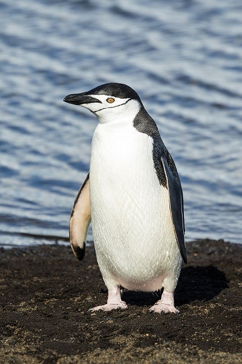

Penguins ( order Sphenisciformes family, Spheniscidae) are a group of aquatic, flightless birds. They live almost exclusively in the Southern Hemisphere, with only one species, the Galapagos penguin, found north of the equator. Highly adapted for life in the water, penguins have countershaded dark and white plumage, and their wings have evolved into flippers. Most penguins feed on krill, fish, squid and other forms of sea life caught while swimming underwater. They spend about half of their lives on land and half in the oceans. Although almost all penguin species are native to the Southern Hemisphere, they are not found only in cold climates, such as Antarctica. In fact, only a few species of penguin live so far south. Several species are found in the temperate zone, and one species, the Galápagos penguin, lives near the equator.
Chinstrap penguin (Pygoscelis antarctica), Deception Island, South Shetland Islands
Penguins seem to have no special fear of humans, and have approached groups of explorers without hesitation. This is probably because penguins have no land predators in Antarctica or the nearby offshore islands. Dog preyed upon penguins while they were allowed in Antarctica during the age of early human exploration as sled dogs, but dogs are now banned from Antarctica.[62] Instead, adult penguins are at risk at sea from predators such as sharks, the orca, and the leopard seal. Typically, penguins do not approach closer than about 3 meters (9.8 feet) at which point they become nervous. This is also the distance that Antarctic tourists are told to keep from penguins (tourists are not supposed to approach closer than 3 meters, but are not expected to withdraw if the penguins come closer).
In June 2011, a penguin came ashore on New Zealand's Peka Peka Beach, 3200 km off course on its journey to Antarctica.Nicknamed Happy Feet, after the movie of the same name, it was suffering from heat exhaustion and had to undergo a number of operations to remove objects like driftwood and sand from its stomach. Happy Feet was a media sensation, with extensive coverage on TV and the web, including a live stream that had thousands of views[65] and a visit from English actor Stephen Fry.
Penguins are popular around the world, primarily for their unusually upright, waddling gait and (compared to other birds) lack of fear of humans. Their striking black-and-white plumage is often likened to a white tie suit. Mistakenly, some artists and writers have penguins based at the North Pole. This is incorrect, as there are no wild penguins in the Northern Hemisphere. The cartoon series Chilly Willy helped perpetuate this myth, as the title penguin would interact with northern-hemisphere species, such as polar bears and walruses.
Penguins have been the subject of many books and films, such as Happy Feet, Surf's Up and The Penguins of Madagascar, all CGI films; March of the Penguins, a documentary based on the migration process of the emperor penguin; and a parody titled Farce of the Penguins. Mr. Popper's Penguins is a children's book written by Richard and Florence Atwater; it was named a Newbery Honor Book in 1939. Penguins have also found their way into a number of cartoons and television dramas; perhaps the most notable of these is Pingu, created by Silvio Mazzola in 1986 and covering more than 100 short episodes. At the end of 2009, Entertainment Weekly put it on its end-of-the-decade, "best-of" list, saying,
Whether they were walking (March of the Penguins), dancing (Happy Feet), or hanging ten (Surf's Up), these oddly adorable birds took flight at the box office all decade long.
If you cannot watch the viedeo follow this link